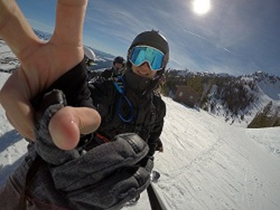
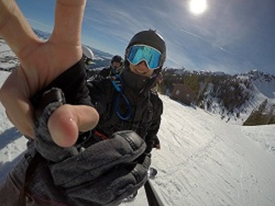

My name is Ryan Quayat and I am from Naperville, IL. I am a senior at the University of Iowa studying Business Analytics and Information Systems. I hope to work with a corporate technology based firm developing software! I currently work at the Target in Coralville, Iowa as a Team Leader, which has helped develop my leadership skills and communication with others. I am also a member of the Ski and Snowboard Club on campus and love hitting the mountain whenever possible. I love mostly all outdoor activities but my favorites are golfing, fishing and shooting.